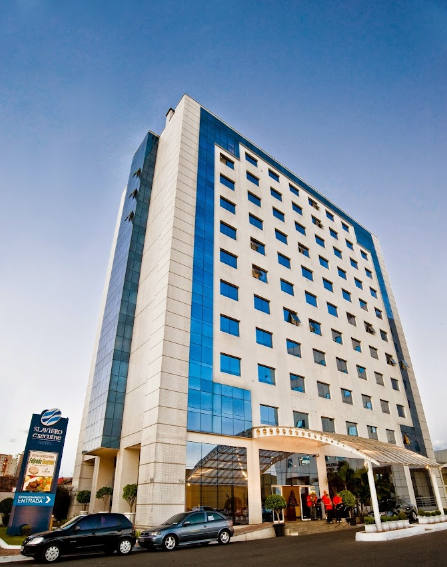
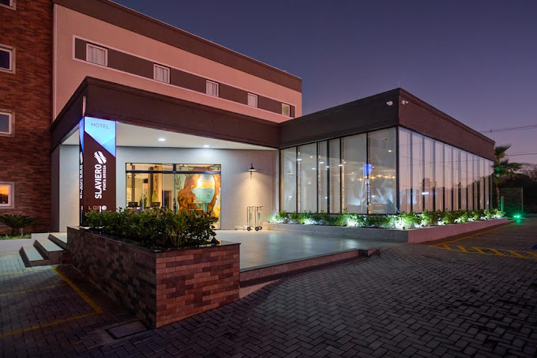
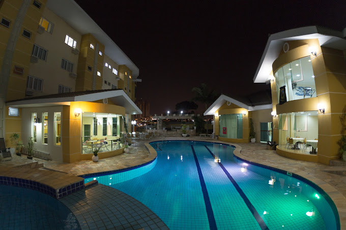

Bem-vindo a EuroTour
Hospedagem
Obrigado por seu interesse em nosso site de hospedagem. Estamos aqui para ajudá-lo a encontrar o lugar perfeito para sua próxima viagem.
O que oferecemos
Nosso site oferece uma ampla variedade de opções de hospedagem, desde hotéis luxuosos até pousadas aconchegantes. Você pode pesquisar por local, data, preço, tipo de acomodação e comodidades.
Bourbon Ponta Grossa Convention Hotel
Este hotel descontraído fica a 2 km do Terminal Rodoviário de Ponta Grossa, a 1 km da Igreja Sagrado Coração de Jesus e a 27 km das formações rochosas únicas do Parque Estadual de Vila Velha. Os quartos simples têm Wi-Fi gratuito, TV com tela plana e frigobar. Os quartos de categoria mais alta incluem cofre, e as suítes oferecem área de estar. Algumas têm micro-ondas e/ou sala de jantar. Serviço de quarto 24 horas.
Estacionamento e café da manhã grátis. Outras comodidades incluem um bar elegante e um restaurante aconchegante com culinária internacional. Há também uma sala de ginástica e uma piscina externa.
Horário de check-in: 14:00
Horário de check-out: 12:00
Hotel Slaviero Ponta Grossa
O Slaviero Ponta Grossa possui um estilo arrojado com design moderno e autêntico, proporcionando aos hóspedes alto nível de conforto e comodidade.
Barbur Plaza Hotel
Se você está procurando um hotel familiar em Ponta Grossa, você acabou de encontrar o Barbur Plaza Hotel.
Devido à proximidade de pontos turísticos importantes, como Catedral Sant'Ana (2,1 km) e Igreja Sagrado Coração de Jesus (2,6 km), os hóspedes do Barbur Plaza Hotel podem visitar com facilidade algumas das atrações mais famosas de Ponta Grossa.
Os quartos do Barbur Plaza Hotel oferecem ar-condicionado e geladeira. Além disso, os hóspedes podem aproveitar a internet à vontade com wi-fi gratuito.
Além disso, ao se hospedar no Barbur Plaza Hotel, os hóspedes podem usar comodidades como serviço de quarto. Você também desfruta da piscina e do café da manhã ao se hospedar no Barbur Plaza Hotel. Precisa de uma vaga para o carro? Há estacionamento grátis no Barbur Plaza Hotel.
Em Ponta Grossa, não deixe de experimentar churrasco em restaurantes próximos, como Restaurante e Churrascaria La Gondola, Bom Mignon ou Prime Beef.
A equipe do Barbur Plaza Hotel espera dar as boas-vindas a você em breve.
